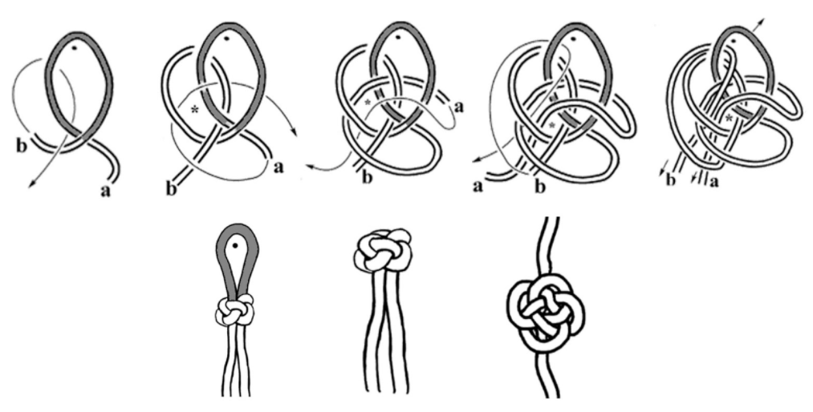
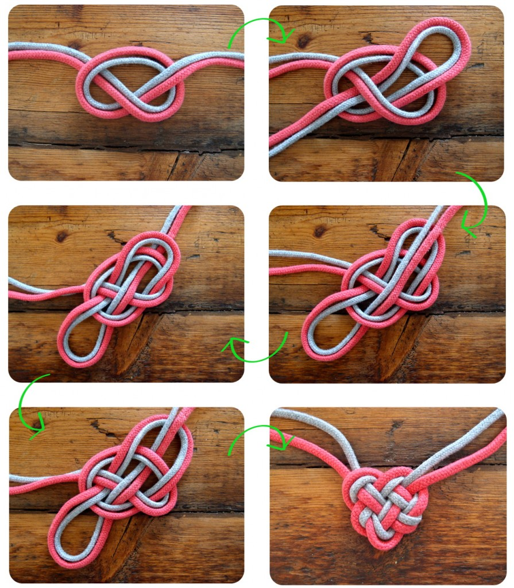
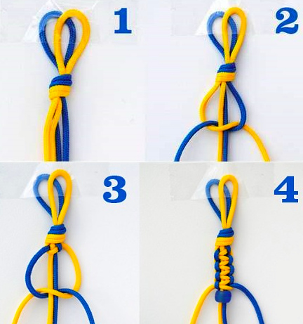

NUDOS DE DECORACION
Los nudos decorativos son una categoría de nudos utilizados principalmente para fines estéticos, aunque algunos también tienen aplicaciones prácticas. Han sido utilizados a lo largo de la historia en artes, manualidades, joyería, y decoración de interiores. Aquí tienes una descripción de algunos de los más comunes y bellos:
NUDOS DE BOTON CHINO
- El nudo de botón chino es un hermoso nudo decorativo que tiene raíces profundas en la cultura china. Es muy conocido por su simbolismo y su atractivo diseño.

NUDO CELTA
- El nudo celta es una de las formas decorativas más icónicas y llenas de simbolismo de la cultura celta. Se caracteriza por sus patrones intrincados y entrelazados que no tienen principio ni fin, lo que lo convierte en un símbolo de eternidad, conexión y espiritualidad.

NUDO DE SERPIENTE
- El nudo de serpiente es un diseño decorativo que destaca por su apariencia sinuosa y elegante, evocando el movimiento y la forma de una serpiente enroscada o deslizándose. Es un nudo que combina estética y simbolismo, a menudo utilizado en joyería y artes decorativas.
